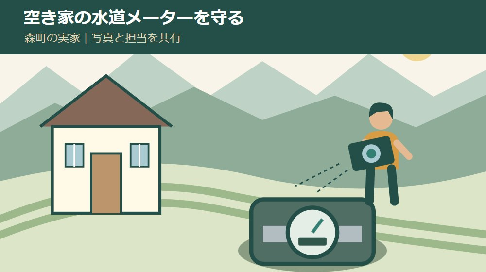
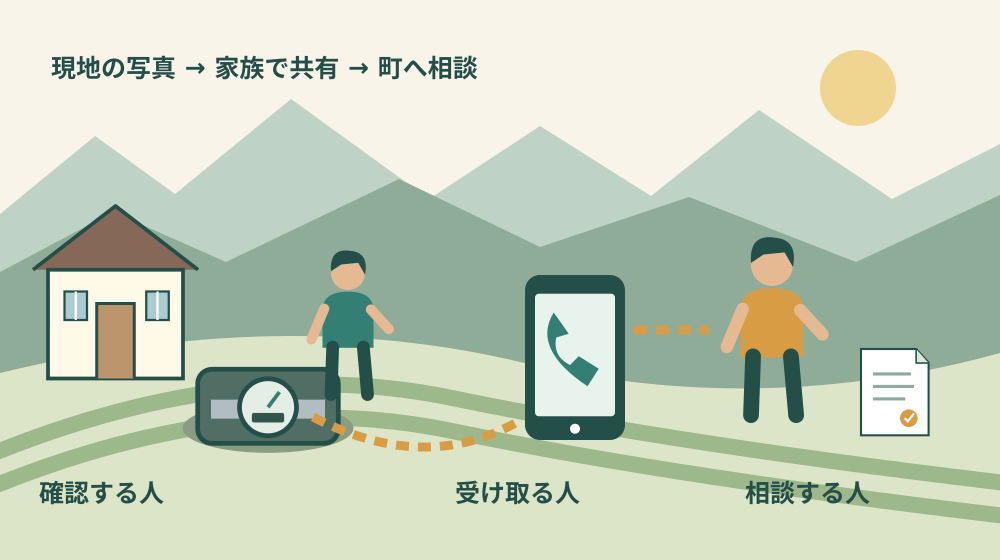

空き家・実家・相続
森町の空き家防犯｜水道メーター盗難に備える

Q. 森町の空き家へ頻繁に行けない。水道メーターの盗難にどう備える？
A. 現状写真、撮影日、確認担当、次の確認予定を家族で共有します。2026年の県内の注意喚起はありますが、森町内の発生件数は未確認です。設備の変更は森町上下水道課へ相談し、検針を妨げる方法や自己判断の撤去を避けます。水道の廃止後は再使用時に加入金が生じるため、防犯と廃止の判断は分けてください。
見回りを続けてきた家族の移動を、まず数える
森町に実家を残し、町外から草刈りや郵便物の回収に通う。空き家の管理は、現地で過ごす時間だけでなく往復の移動も仕事になります。仕事や介護の予定を調整してきた家族へ、「もっと頻繁に見に行って」で済ませたくありません。
私は大石浩之（磐田市／不動産業）です。今回は、水漏れや凍結とは分けて、水道メーターの盗難への備えを考えます。設備の現状を写真に残し、誰が変化を確かめるかを共有する。防犯機器を買う前にも始められる段取りです。
富士宮市の注意喚起、静岡県公式サイト掲載の県警察のチラシ、森町の水道案内を2026年9月29日に確認しました。県内での注意喚起と森町の実際の被害は別です。森町内の発生件数を、この資料から推測して書くことはしません。
2026年の注意喚起は、空き家の設備にも目を向けている
富士宮市の「水道メーターが狙われています」は、2026年に入って静岡県内で水道メーターの窃盗事犯が相次いでいると知らせています。対象として挙がるのは、空き家や集合住宅の空き部屋に設置されたメーターです。家の中の貴重品だけが防犯の対象ではありません。
同市は、防犯カメラやセンサーライト等の設置、メーター設置場所の管理、見回りの強化を挙げています。これは富士宮市が掲載する県内の注意喚起です。森町の特定地区が狙われているという情報や、町内の被害件数が示されているわけではありません。
ページの表示は2026年3月30日更新です。この日を窃盗事件が起きた日や、注意喚起の初回公表日として扱うことはできません。家族へ知らせるときは「2026年の県内の注意喚起」と伝え、確認できない場所や日時を付け足さないようにします。
県警察本部生活安全企画課のチラシは、空き家の施錠確認、郵便物をためないこと、庭木や雑草の手入れ、定期的な見回りなどを案内しています。チラシ自体の発行日は確認できませんでした。この記事では2026年9月29日に掲載を確認した資料として使います。
私は、この二つの資料を読んで、家の外にある設備を管理の記録へ加える意味があると考えます。家財を片付けたから防犯は終わり、という順番にはしません。まず水道メーターの場所と普段の状態を、所有者側が説明できるようにします。
現状写真は、メーターだけでなく周囲との位置関係を残す
水道メーターの確認は、所有者や許可を受けた管理担当者が安全に立ち入れる範囲で行います。暗い時間や足場の悪い日に、無理にふたを開ける必要はありません。設備へ手を加えず、確認できた範囲と未確認の部分を分けて記録します。
私が提案する最初の写真は、敷地のどこにメーターボックスがあるか分かる一枚です。玄関、通路、門などとの位置関係を含めます。次の担当が現地へ来たとき、説明を電話で聞きながら探し回らずに済むようにするためです。
次に、ボックスや周囲の状態が分かる写真を残します。草が覆っていないか、物が載っていないか、ふたや周辺に以前との違いがないかを確認します。機器の正常性を写真だけで診断するのではなく、変化に気付くための基準を作る作業です。
写真には撮影日、撮影者、場所、気になった点を短く添えます。「異常なし」と書く場合も、どこまで見たかを残してください。外から確認しただけなのか、許可された範囲で内部の表示まで見たのかが違えば、次の確認の範囲も変わります。
写真の共有先は所有者側の必要な人に限定します。空き家の住所や設備の位置、留守の期間を公開SNSへ載せる必要はありません。家族への引継ぎと、不特定多数への発信を分けることも、管理の手順に含めたいと私は考えます。
実家全体の確認順序は、秋分の帰省時に確認する空き家管理の記事を参照できます。今回の記録には「設備の盗難や変化」という欄を追加し、雨樋や水漏れの点検を済ませたから確認済みとしないようにします。
良い点｜写真があれば、現地へ行かない家族も参加できる
現状写真を共有する良い点は、管理の情報を現地担当一人の記憶に閉じ込めないことです。空き家の庭や設備は、通っている人には当然の場所でも、町外の家族には分からないことがあります。写真を介して、その差を小さくできます。
私は、現地へ行けない家族にも記録の整理を受け持ってもらう方法を勧めます。撮影日はいつか、次の確認予定は決まっているか、町への質問は誰が連絡するか。机の上でできる作業を分けると、運転や現場作業の担当だけに負担が集中しません。
県警察のチラシが案内する郵便物の回収や庭木の手入れは、見回りと組み合わせて考えられます。毎回新しい用事を作るのではなく、予定している管理の中で設備の外観も確認する。私はその方が、家族の生活に合わせて継続しやすいと考えます。
変化を発見したときに説明しやすい点も利点です。前回と今回の写真、見つけた日時、設備を使っているかどうかが分かれば、町へ質問する内容が具体的になります。写真は被害を防ぐ保証ではありませんが、連絡時の曖昧さを減らす材料になります。
防犯カメラやセンサーライトを検討する場合にも、現地の写真は役に立ちます。機器を付ける場所、電源や通信の有無、近隣の窓との位置関係を確認する材料になるからです。私は、商品の宣伝だけを見て購入を決める前に、敷地の条件を整理したいと考えます。
注文したい点｜見回りの強化だけでは、担い手が決まらない
見回りを増やすという案内だけでは、遠方の所有者が何を変えればよいかは決まりません。移動できる曜日、鍵を持つ人、草刈りの依頼先、記録を受け取る人まで決めて、初めて実行の予定になります。私は防犯を、根性で通う回数の話にしたくありません。
一律に毎週や毎月を安全な頻度として示すこともできません。今回確認した資料から、どの空き家にも十分な見回り間隔は分かりません。家の状態、周囲の環境、家族が通える範囲を踏まえ、次の確認日を具体的に決めるところから始めます。
近所の方へ協力を頼む場合は、依頼を受けてもらえる範囲を確かめます。外から変化を見たら知らせるのか、敷地へ入るのか、鍵を預かるのかでは負担が違います。善意だけを当てにせず、できない日や緊急時の連絡先も共有する方法を私は勧めます。
管理業者を使うなら、写真報告の有無、設備の外観確認を含むか、異常時にどこまで連絡するかを質問します。巡回契約が修繕工事や24時間の駆け付けまで含むとは限りません。料金と業務の範囲を合わせて比較し、担当を決めてから依頼します。
防犯機器にも継続の仕事が残ります。電源、電池、通信、映像の確認担当など、設置後に誰が確かめるかを決めます。近隣の生活を必要以上に撮影しない配慮も必要です。設置しただけで見回りの役割が消えると考えず、運用の負担まで検討します。

森町では、盗難対策のために勝手に撤去・廃止しない
森町の検針案内は、水道メーターを見やすく保ち、正しい検針に協力するよう求めています。盗難への不安から重い物で覆ったり、検針に必要な作業を妨げたりする方法は、先に町へ相談してください。防犯と水道管理を両立する条件を確認します。
富士宮市の注意喚起には、使用していないメーターの撤去が設置場所の管理の例として挙がります。ただし、それを森町の所有者が自分で取り外してよいという案内には読み替えられません。個別設備への対応や工事の要否は、森町上下水道課へ照会する必要があります。
森町の「水道の開始・廃止・名義変更等の届出について」は、一度廃止すると、再使用は新規扱いとなり加入金が発生すると説明しています。空き家だから当面使わないという事情だけで、再利用の予定を確かめず廃止を決めると、後の支出に影響します。
同ページは、廃止方法を上下水道課の窓口で相談し、必要書類を提出する流れを示しています。電話や問い合わせフォームだけで開栓・閉栓等を受け付けるものではなく、所定の給水届が必要です。質問の電話と、正式な届出の完了も分けて考えます。
上下水道課上水道管理係の電話は0538-85-6326です。「空き家のメーターの盗難が心配です。給水を続ける場合、検針を妨げずにできる対応はありますか」と聞けば、防犯と利用継続の両方を相談できます。これは本記事が提案する質問例です。
廃止後の費用の考え方は、実家の水道と再開時の加入金の記事で扱っています。この記事では、盗難への備えと水道契約の判断を混ぜないことに絞ります。家族へ話すときも、防犯設備を変える相談と廃止の相談を区別します。
対案・結論｜現状写真と確認担当を、同じ連絡で共有する
空き家の水道メーターについて今日行う一歩は、手元の現状写真と確認担当を家族へ共有することです。写真がなければ、次に安全に現地へ行ける人と日を決めます。撮影のためだけに無理な移動を増やさず、予定済みの用事と組み合わせる方法もあります。
共有する内容は「場所」「撮影日」「確認できた範囲」「次に見る人」「次の予定日」です。誰かが行くだろう、という状態を残さないため、担当者の返事まで確認します。予定が変わったら、実施済みにせず変更した日付を残してください。
家族の連絡には、設備を触らず、変化があれば所有者側へ知らせるという範囲も書き添えます。親族が親切で応急修理まで始めると、町へ確認したい状況が分からなくなる可能性があります。見る担当と工事を判断する担当を分ける提案です。
担当者が動けないときは、次の人へ引き継ぐか、管理業者へ相談するかを決めます。依頼費用を出せる人と現地へ行ける人が違うなら、費用の承認方法も短く記録します。長続きする仕組みにするには、移動の負担を家族で見えるようにする必要があります。
なくなった・壊れたと気付いたら、安全と連絡を先にする
メーターが見当たらない、設備に壊されたような跡があるなどの変化に気付いても、その場で盗難と断定する必要はありません。予定された工事や交換がないかも含めて確認します。不審者がいる場合は近づいたり追いかけたりせず、安全な場所から警察へ連絡してください。
水が出ている、設備が損傷している場合は、自分で取り外しや復旧を試みず、上下水道課へ状況を伝えます。安全に撮影できるなら、発見時の状態と日時を残します。危険がある場所へ写真のために近づく必要はありません。
連絡のために、住所、所有者側の連絡先、最後に普段の状態を確認した日、今回気付いた変化をまとめます。分からない項目は分からないと伝えます。写真がないことを理由に連絡を遅らせず、確認できた事実から説明する方法を私は勧めます。
富士宮市の掲載する警察署の番号は、富士宮市の案内に対応するものです。森町の実家の異常を相談する際の窓口へ、そのまま置き換えることはしません。緊急性がある場合の警察への連絡と、水道設備の相談を、それぞれ適切な窓口へつなぎます。
家族へ残す記録は、空き家の活用を考えるときにも使える
設備の記録は、日常管理がいつまで続くか分からない家にも役立ちます。鍵の保管者、連絡を受ける人、水道の利用状況、町に聞いた内容が揃えば、管理担当が交代しても同じ質問を最初から繰り返さずに済みます。
森町の空き家バンクを所有者が使うための記事を読む段階になっても、写真と確認記録は現状説明の材料になります。売却や賃貸をまだ決めていない時期の記録にも意味があります。私は、防犯のための整理を急な売却の入口にする必要はないと考えます。
写真は同じ角度で比較できると便利ですが、古い写真を最新の状態として渡さないようにします。ファイル名に日付を入れ、町や業者へ送るときにも撮影日を伝えます。契約番号や個人情報が写る場合は、提出先に必要な範囲だけ共有してください。
大石の視点｜見に行く人だけへ、防犯を背負わせない
私は、空き家の防犯を「持ち主なら毎回通えるはず」という話にしたくありません。森町の実家を支えてきた人には、既に移動と維持費の負担があります。追加の見回りを頼む前に、写真を誰が受け取り、次の連絡を誰がするかを決めたいと考えます。
私なら、家族の予定表を開いて、現地確認の欄と電話連絡の欄を別々に作ります。これは実際の相談事例ではなく、私の意見としての提案です。運転できない家族にも担える仕事があれば、現地へ行く一人を孤立させずに済みます。
どの機器を付けるのがよいかは、現場を見ずには分かりません。私は、防犯への支出を増やすべきか、今の管理の引継ぎを先に整えるべきかで迷う余地があると考えます。そこで最初は、費用の大きな工事を決めず、現状写真と確認担当を揃えます。
水道メーターも空き家の管理対象です。ただし、守るために水道を失う判断を急ぐ必要はありません。写真を共有し、設備変更は町へ確認する。その小さな手順が、今日の防犯と将来の住み手への引継ぎを同時に支えます。
よくある質問
空き家の水道メーター盗難への備えについて、設備の扱いと見回りの疑問を整理します。
盗まれないように水道メーターを自分で外してもよいですか？
自己判断で取り外すのではなく、森町上下水道課上水道管理係0538-85-6326へ設備の対応を相談してください。富士宮市の注意喚起の撤去例を、森町で自分が外してよいという意味には読み替えられません。森町は検針しやすい管理を求めています。廃止後の再使用は新規扱いで加入金が発生する点も確認が必要です。
どのくらいの頻度で見回れば十分ですか？
今回の公式資料では、どの空き家にも十分な見回り頻度は示されていません。家の状態、周囲の環境、通える家族や管理業者の条件に合わせ、次の確認日と担当を決めます。写真の撮影日と確認範囲を共有し、行けない場合の引継ぎ先も用意してください。回数だけを増やすより、実施と報告が途切れない段取りを作る提案です。
森町でも水道メーターの盗難が起きていますか？
この記事で確認した富士宮市の注意喚起は、2026年の静岡県内の状況を伝えるものです。森町内の発生件数や地区別の被害は資料に記載がなく、確認できていません。県内の情報を町内の被害と断定せず、所有する空き家の現状を確かめる材料として使ってください。設備に変化があれば、安全を確保して関係窓口へ相談します。
実家の情報を一つずつ整理したい方は、実家カルテも確認できます。売却未定でも使える、本サイト運営会社の民間サービスです。森町役場の手続ではなく、利用は任意です。
公式情報源
2026年9月29日確認（2026年9月確認）。開催・受付状況、制度や費用は変わる場合があります。行動前に公式情報を確認し、個別の登記・税務・契約・工事の判断は担当窓口や専門家に相談してください。